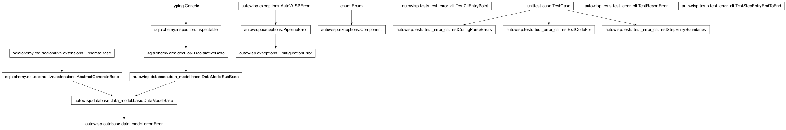
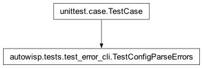
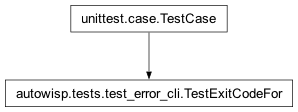
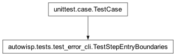

autowisp.tests.test_error_cli module
Class Inheritance Diagram

Unit tests for CLI error reporting and the entry decorator.
- class autowisp.tests.test_error_cli.TestCliEntryPoint(methodName='runTest')[source]
Bases:
_CliTestCasecli_entry_point reports and exits non-zero on an escaping error.
- class autowisp.tests.test_error_cli.TestConfigParseErrors(methodName='runTest')[source]
Bases:
TestCase
Stored-config parse errors are catchable, not an uncatchable exit.
The pipeline builds each step’s config dict by feeding stored configuration through the step’s
ManualStepArgumentParser(seeProcessingManager.get_config). A bad value there must raise a recordableConfigurationErrorrather than argparse’s defaultSystemExit, which would silently end a detached run.- test_config_mode_raises_configuration_error()[source]
In config-parse mode, a bad value raises ConfigurationError.
- class autowisp.tests.test_error_cli.TestExitCodeFor(methodName='runTest')[source]
Bases:
TestCase
exit_code_for distinguishes the components.
- class autowisp.tests.test_error_cli.TestReportError(methodName='runTest')[source]
Bases:
_CliTestCasereport_error persists, renders to the stream, returns the code.
- class autowisp.tests.test_error_cli.TestStepEntryBoundaries(methodName='runTest')[source]
Bases:
TestCase
Every pipeline-step main() is wrapped as a CLI error boundary.
- class autowisp.tests.test_error_cli.TestStepEntryEndToEnd(methodName='runTest')[source]
Bases:
_CliTestCaseA real decorated step main() surfaces an escaping error.